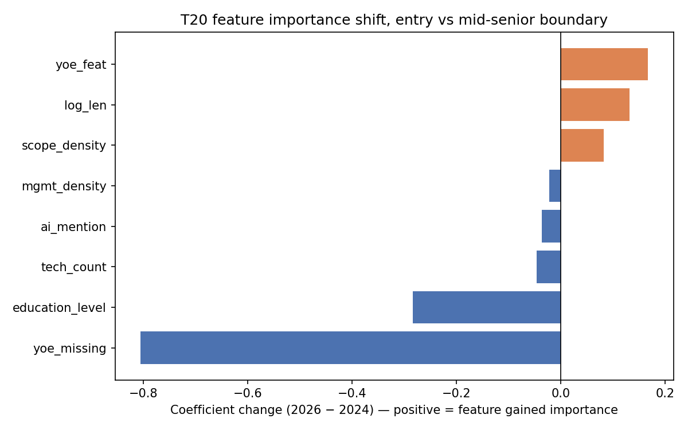
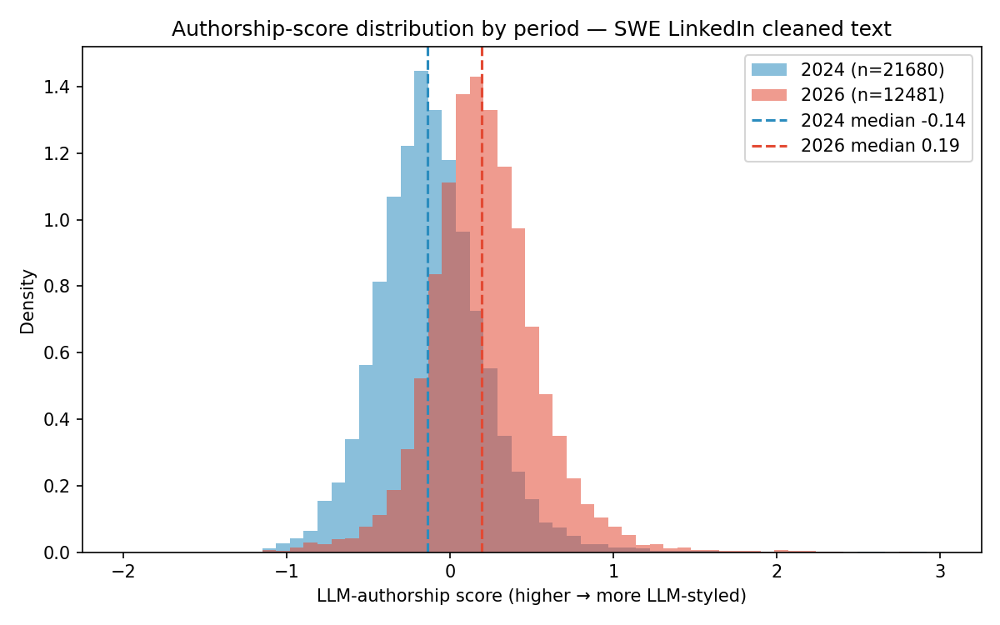
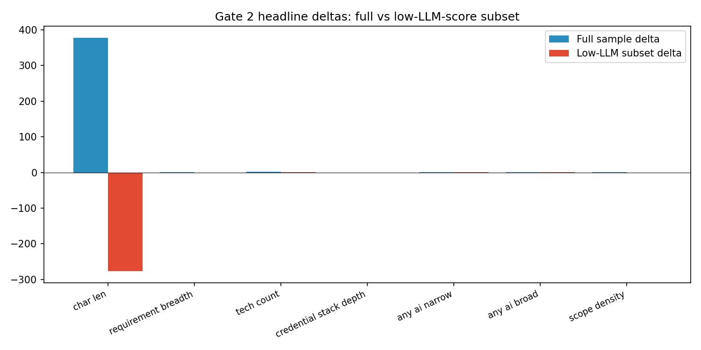

Finding 5 — What does NOT survive robustness checks¶
Three claims that were framed as findings earlier in the exploration do not survive calibration, macro-robustness, within-company decomposition, or style matching. Reporting nulls is part of the contribution — every one of these was a dominant framing that would have made the paper wrong.
Null 1 — Aggregate junior-narrowing¶
The original framing¶
"Junior-share declined; the junior rung is narrowing. Employers demand more experience; entry jobs are shrinking."
Why it fails¶
| Test | Result | Verdict |
|---|---|---|
Within-2024 SNR on seniority_final entry share |
0.33 (threshold 2.0) | Not safe to pool 2024 |
| Arshkon-only baseline entry share | 7.72% → 6.70% (−1.0 pp, FLIPS direction) | Direction unstable |
| Arshkon excluding 7 entry-specialist intermediaries | −2.1 pp | Driven by composition |
seniority_final vs YOE ≤ 2 proxy within overlap panel |
−3.2 pp vs +1.1 pp (direction disagreement) | Specification-dependent |
| T19 macro-robustness ratio | 0.86× (threshold 10) | Below within-scraped-window drift |
Denominator drift (of known) |
61% → 47% between periods | Structurally biased |
| JOLTS info-sector openings between windows | −29% | Macro cooling dominates |
The cross-period effect is literally smaller than within-scraped-window drift. Any aggregate junior-share headline based on a single operationalization is a specification-dependent claim.
The narrow surviving claim¶
Within-archetype credential-stack convergence. See Finding 1 (field-wide AI explosion) and task T28:
- Credential-stack gap converges in all 10 large archetypes under T28's definition.
- Under an independently defined 6-category credential stack (V2 re-derivation), 10/10 converge at similar magnitudes.
- Gap flips sign in 2-7 archetypes depending on credential pattern definition (T28: 7/10; V2: 2/10). Cite convergence in all 10. Do not cite "7/10 flip" as headline (pattern-dependent).
Null 2 — Seniority-boundary convergence¶
The original framing¶
"Seniority levels are blurring; roles are converging as AI reshapes the work."
Why it fails¶
Three of four boundaries sharpened on a structured 8-feature classifier (T20, stratified 5-fold CV, L2 logistic):
| Boundary | 2024 AUC → 2026 AUC | Direction |
|---|---|---|
| Entry ↔ mid-senior | 0.836 → 0.876 (+0.040) | SHARPENED |
| Associate ↔ mid-senior | 0.691 → 0.791 (+0.100) | SHARPENED |
| Entry ↔ associate | 0.626 → 0.719 (+0.093) | SHARPENED |
| Mid-senior ↔ director | 0.677 → 0.616 (−0.061) | blurred (single) |
The only boundary that blurred is mid-senior ↔ director, and it has a clean mechanism: the tech_count coefficient flipped sign (−0.48 → +0.35) — 2026 directors mention more technologies than 2026 mid-senior postings, the opposite of the 2024 gradient. Directors shed people-management and gained tech orchestration. See Finding 3 (senior orchestration specialization).
The T15 embedding work also fails the 2.0 SNR threshold (1.90 and 1.94 on junior↔senior cosine) — corpus-level convergence is a null, not "divergence." Per-archetype follow-up: no archetype converges, Java enterprise slightly diverges.
Null 3 — Length growth as scope inflation¶
The original framing¶
"Descriptions got longer because requirements got more demanding."
Why it fails¶
T29 trained an authorship-style composite on corpus-level stylistic features (em-dashes, bullet density, paragraph structure, etc.) and matched 2024/2026 postings on style before computing cross-period deltas:
- 88.7% of 2026 postings score above the 2024 median on the authorship composite.
- Style-matched attenuation on content metrics:
requirement_breadth: −62% (1/3 real, 2/3 style)tech_count: −23% (mostly real)char_len: attenuates substantially (feature-set dependent)- By contrast: AI broad attenuates 0-7%, AI narrow 0% — the AI rise is real content.
The length growth is mostly recruiter-LLM drafting style migration, not content expansion. This is the Wave 3 result that overturns the original T13 "length grew in responsibilities, not boilerplate" framing as a proxy for scope change.
Gate 3 correction applied: cite the attenuation story (23-62% on content metrics), NOT the feature-set-dependent "char_len flips to −411" number. (V2 narrowing 1.)
Figures¶

T20 —tech_count coefficient flipped sign at the mid-senior/director boundary. Directors were recast.

T29 — 88.7% of 2026 postings score above the 2024 median on the authorship-style composite.
T29 — AI rise is content-real (0-7% attenuation); length and requirement-breadth are mostly style migration (23-62% attenuation).Also dropped (shorter list)¶
- "ML/AI eats frontend" (composition mechanism) — T28 within-domain dominates between-domain 85-113%; frontend did not shrink.
- "General management language rose" (T11 aggregate) — V1 precision fail; narrow rebuild in T21 is the only surviving claim.
- "ML/AI is entry-poor" (Alt B premise) — T09 junior share in ML/AI is comparable to other archetypes.
- "Staff is the new senior" — staff absorbs only ~22% of the senior-title drop on the 150-company overlap panel.
Task citations¶
- T05, T08 — within-2024 SNR, arshkon flip.
- T19 — macro-robustness ratio 0.86× on entry share.
- T20 — boundary sharpening classification.
- T28 — within-archetype credential-stack convergence 10/10.
- T29 — authorship-style matching attenuation.
- V1 verification, V2 verification — corrections applied.